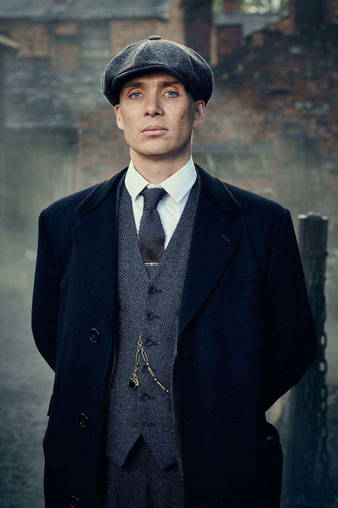
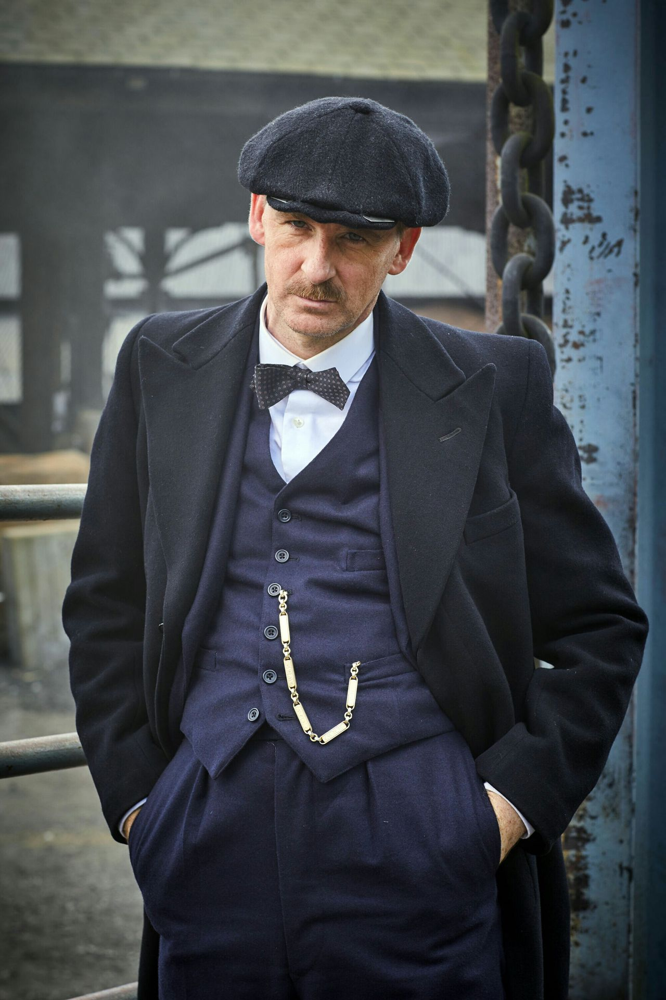

By Order Of The Peaky Blinders
- Création des Peaky Blinders
- Activités des Peaky Blinders
- Membres des Peaky Blinders
Création des Peaky Blinders
Les Peaky Blinders, tels qu'ils sont présentés dans la série télévisée du même nom, sont une création fictionnelle inspirée par l'histoire de gangs criminels de Birmingham, en Angleterre, du début du 20e siècle.
La série, créée par Steven Knight, suit principalement le personnage de Thomas Shelby et sa famille. L'intrigue débute après la Première Guerre mondiale, où les Shelby cherchent à établir leur domination dans le milieu criminel de Birmingham. Le nom "Peaky Blinders" fait référence à la pratique supposée de cacher des lames de rasoir dans les visières de leurs casquettes.
La série explore la montée en puissance du gang, ses interactions avec d'autres factions criminelles, ainsi que les aspects politiques et sociaux de l'époque. La création des Peaky Blinders combine des éléments de fiction avec des influences historiques pour offrir un récit captivant de la criminalité organisée dans l'Angleterre des années 1920.
Activités des Peaky Blinders
Les Peaky Blinders sont une bande criminelle fictive du début du 20e siècle, basée à Birmingham, en Angleterre, telle qu'elle est dépeinte dans la série télévisée du même nom.
Dirigée par Thomas Shelby, la famille Shelby, connue sous le nom de Peaky Blinders en raison de l'habitude de cacher des lames de rasoir dans les visières de leurs casquettes, est impliquée dans diverses activités criminelles, notamment le jeu, le vol, le trafic d'armes et le contrôle de quartiers.
La série explore la montée en puissance de la famille Shelby dans le monde interlope, leurs alliances politiques, leurs rivalités avec d'autres gangs, et les défis auxquels ils sont confrontés alors qu'ils cherchent à consolider leur pouvoir et à étendre leur influence. L'intrigue est également marquée par des éléments de politique, de romance et de drame familial.
Membres des Peaky Blinders
Les Peaky Blinders, dirigés par Thomas Shelby, sont une famille criminelle notoire basée à Birmingham dans la série du même nom. Les membres clés du gang incluent Thomas Shelby lui-même, le cerveau stratégique du groupe, Arthur Shelby, son frère impulsif et parfois violent, et Polly Gray, leur tante, qui assume un rôle de matriarche et de conseillère.
Les autres membres importants comprennent John Shelby, le frère cadet, et Ada Shelby, la sœur qui a des liens complexes avec le monde criminel. Chacun des membres contribue à sa manière aux activités du gang, que ce soit dans la gestion des affaires, la planification stratégique, ou l'exécution de missions dangereuses.
Au fil de la série, des alliances se forment et se brisent, des trahisons surviennent, et les personnages évoluent dans un monde de violence, de politique et de quête de pouvoir.
Thomas Shelby
Découvrir son histoire
Arthur Shelby
Découvrir son histoire